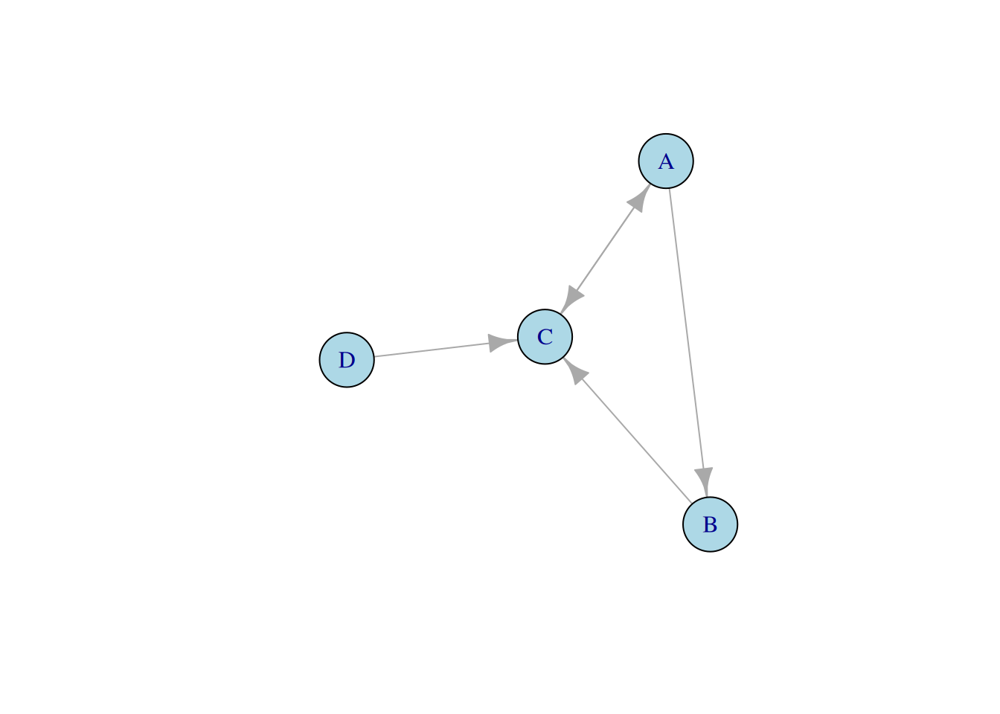

# A B C
P <- matrix(c(0.7, 0.1, 0.1, # A
0.2, 0.8, 0.1, # B
0.1, 0.1, 0.8), # C
nrow = 3, byrow = TRUE)
P [,1] [,2] [,3]
[1,] 0.7 0.1 0.1
[2,] 0.2 0.8 0.1
[3,] 0.1 0.1 0.8Tres marcas (A, B y C) se reparten el mercado. Cada año, los clientes cambian de marca según esta lógica:
Definimos la matriz de la siguiente forma: para cada marca \(j\), se almacena un peso \(P_{ij}\) que hay de pasar del nodo \(j\) al nodo \(i\).
# A B C
P <- matrix(c(0.7, 0.1, 0.1, # A
0.2, 0.8, 0.1, # B
0.1, 0.1, 0.8), # C
nrow = 3, byrow = TRUE)
P [,1] [,2] [,3]
[1,] 0.7 0.1 0.1
[2,] 0.2 0.8 0.1
[3,] 0.1 0.1 0.8autovalor <- eigen(P)
cat("Autovalores: ")Autovalores: autovalor$values[1] 1.0 0.7 0.6cat("Mayor autovalor: ", autovalor$values[1])Mayor autovalor: 1cat("\nAutovector normalizado asociado al autovalor anterior:\n")
Autovector normalizado asociado al autovalor anterior:autovalor$vectors[, 1] / sum(autovalor$vectors[, 1])[1] 0.2500000 0.4166667 0.3333333Podemos ver que el mayor autovalor asociado es 1 y su vector asociado normalizado es el que se muestra en la salida.
A largo plazo podemos ver que para la marca A tiene un 25% de los clientes, la B un 42% de los clientes y C un 33%. Esto significa que en el futuro la marca B liderará siempre el mercado, da igual que estado inicial tengamos.
library(expm)
poblacion_inicial <- c(100, 100, 100) # 100 usuarios para cada marca
poblacion_final <- (P %^% 50) %*% poblacion_inicial
poblacion_final [,1]
[1,] 75
[2,] 125
[3,] 100Podemos ver que al final B siempre lidera el mercado. 125 clientes acaban en B, 75 en A y 100 en C. ¿Y su normalizamos ese vector?
poblacion_final / sum(poblacion_final) [,1]
[1,] 0.2500000
[2,] 0.4166667
[3,] 0.3333333Es el mismo vector que el autovector asociado anterior! Esto confirma que el sistema es estable y se cumple la cuota futura de cada marca a lo largo del tiempo.
Un consejo científico quiere medir la influencia de 4 investigadores (A, B, C y D) basándose en cómo se citan entre ellos:
Para mostrar el grafo necesitamos la matriz de adyacencia, donde \(M_{ij} = 1\) si \(j\) cita a \(i\). La matriz resultante y además normalizada es la siguiente que se muestra.
library(igraph)
M <- matrix(
c(0, 0, 1, 0, # A
1, 0, 0, 0, # B
1, 1, 0, 1, # C
0, 0, 0, 0), # D
nrow = 4, byrow = TRUE)
grafo <- graph_from_adjacency_matrix(t(M))
V(grafo)$name <- c("A", "B", "C", "D")
plot(grafo, vertex.color = "lightblue", vertex.size = 30)
M <- scale(M, center = FALSE, scale = colSums(M)) # Normalizamos las columnas
M [,1] [,2] [,3] [,4]
[1,] 0.0 0 1 0
[2,] 0.5 0 0 0
[3,] 0.5 1 0 1
[4,] 0.0 0 0 0
attr(,"scaled:scale")
[1] 2 1 1 1Analizando más fácilmente el grafo de forma visual, podemos ver que da igual el camino que cojamos siempre podemos ir a otro nodo. Otra forma de comprobarlo es viendo en la matriz de adyacencia que no exista ninguna columna con todo 0.
Necesitamos crear una matriz J llena de 1. Tras eso usamos la fórmula de la matriz G.
J <- matrix(rep(1, 4*4), nrow = 4, byrow = TRUE)
G <- 0.85 * M + (1 - 0.85) * (1 / 4) * J
G [,1] [,2] [,3] [,4]
[1,] 0.0375 0.0375 0.8875 0.0375
[2,] 0.4625 0.0375 0.0375 0.0375
[3,] 0.4625 0.8875 0.0375 0.8875
[4,] 0.0375 0.0375 0.0375 0.0375
attr(,"scaled:scale")
[1] 2 1 1 1res <- eigen(G)
scores <- res$vector[, 1] / sum(res$vector[, 1])
scores <- Re(scores)
scores[1] 0.3725269 0.1958239 0.3941492 0.0375000Ya calculado los autovalores y, con el máximo, obtener los autovectores asociados a mismo, obtenemos lo siguiente. Vemos que el más influyente es C, con un 39%, ya que recibe citas de tanto A, B y D. Le sigue A de cerca con un 37%. Eso es debido a que como solo C cita a A, su influencia le da peso a A. Y por último los menos influyentes con un 20% y 4% a B y D, respectivamente.
No coincide con el grado de entrada, ya que por ejemplo B y A tienen en mismo grado (ambos solo citan a 1) y A es mas influyente que B.